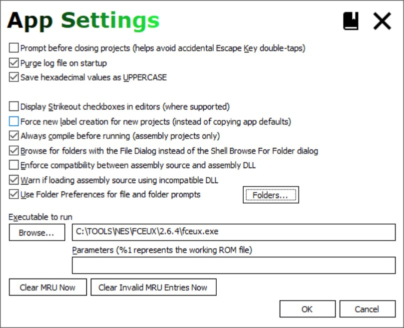
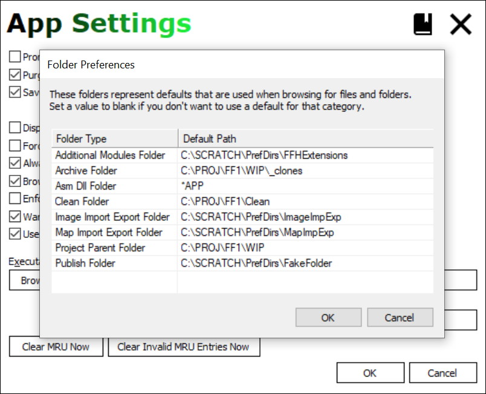
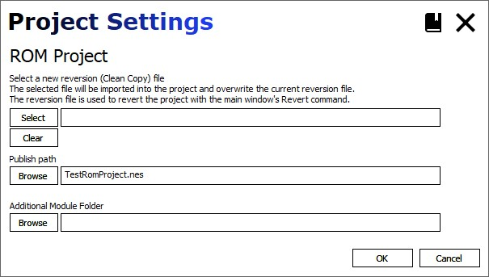
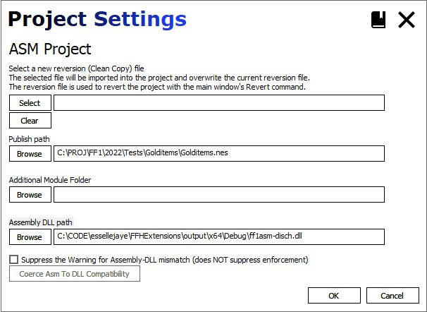
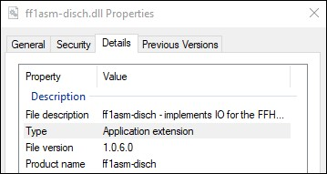
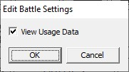
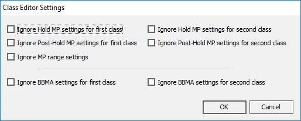
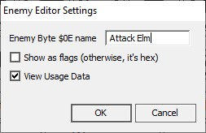
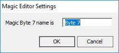
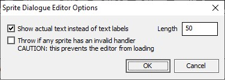

Settings
Settings
app-settings]=[
App Settings

| Field | Detail |
|---|---|
| Prompt before closing | When checked, pressing escape displays a prompt to confirm closing the app. |
| Purge log on startup | Purge the log file on startup. |
| Save hex as UPPERCASE | In certain editors, hex values will save using uppercase digits. |
| Show background art | If unchecked, turn off the background images. |
| Display strikeout checkboxes | In some editors. checkboxes are replaced with strikethrough labels. Click the labels to toggle the strikethrough. This is a requested experimental feature that was left in and is off by default. |
| Force new label creation | Sets the default state of the same checkbox on the project creation windows. |
| Always compile before running | When the Run is clicked, Assembly projects will compile before running. |
| Browse with File Dialog | When checked, the File Dialog's folder picker UI is used to selected folders. When unchecked, the Shell Browse for Folder dialog is used instead. The option is checked by default to use a the File DIalog for folder selection (introduced in WIndows Vista).On XP, this is done via a hack of the file dialog. |
| Enforce Compatbility | EXPERIMENTAL This supersedes the Warn option below and if checked disables that option on the dialog. When checked, an attempt to create an assembly project will attempt to verifyif the assembly handling DLL recognizes the format of the Assembly zip being used to create
the project. If that check fails, then project creation fails. The check is defined by the assembly handling DLL, not the FFHacksterEx executable. |
| Warn if loading incompatbile ASM DLL | EXPERIMENTAL Similar to the Enforce option above, but instead of blocking project creation ona failed check it displays a modal warning message before continuing. |
| Folders | Define folder preferences, which are default folders used with
various prompts throughout the program. The "Use Folder preferences" check box toggles the preferences; if unchecked, then the last directory that was OK'd will be used for the next file or folder prompt. See the section below regarding Folder Preferences. |
| Executable to run | The run command will attempt to run the specified executable. Click Browse to select the executable to run. Parameters are specified in the designated edit control. If left blank, then the working ROM filepath is passed as the only parameter. Otherwise, use %1 to indicate where in the params to pass the working ROM filepath. e.g.
|
| Clear MRU Now | Removes all entries from the right-click MRU for the Welcome Screen's Open Project button. |
| Clear Invalid MRU Entries Now | Removes filepaths that don't exist from the right-click MRU for the Welcome Screen's Open Project button. |
Folder Preferences
These folders are used as defaults for the specified types of prompts.
All of these folder settings are optional; if unspecified, the prompts will typically use the folder from the most recent prompt dialog.

NOTE: Set a path to the placeholder to the path *APP to use the application folder.
This allows copying the application folder to another location without having to adjust the paths stored in settings
to accommodate the move.
| Folder Type | Detail |
|---|---|
| Additikonal Modules | If using Extensions, then this is a folder where the application can search to find modules that you want to share between projects. |
| Archive | Used with the Archive command, this is the default folder where project archives will be stored and searched. |
| Asm Dll | Where to look when prompting for an assembly DLL. When unspecified, the program folder is used. |
| Clean | Looks here for clean copies of ROM files and Assembly zips. |
| Image Export/Export | Saves and loads images exported from various dialogs (e.g maps). |
| Map Import/Export | Saves and loads map data files to this directory. |
| Project Parent | The parent directory used for operations that prompt for one. For example, project creation. |
| Publish | Folder used with the Publish command. That command copies the working ROM to an output filename in this folder. |
project-settings]=[
Project Settings
There is a slight difference between ROM and Assembly projects.
ROM projects

| Field | Detail |
|---|---|
| Select new reversion file | Pick a new "clean copy" ROM file to use with the Revert command. |
| Publish Path | If specified, the Publish command copies the working ROM (with all of your changes) to this filepath. |
| Additional Modules Folder | If specified, the app will also look here for extensions. |
Assembly projects

| Field | Detail |
|---|---|
| Select new reversion file | Pick a new "clean copy" assembly ZIP file to use with the Revert command. |
| Publish Path | If specified, the Publish command copies the working ROM (with all of your changes) to this filepath. |
| Additional Modules Folder | If specified, the app will also look here for extensions. |
| Assembly DLL path | The assembly DLL used for the project. Note that this is available for those implementing new assembly handling DLLs. If you're just authoring an assembly project, then you can ignore this field. |
| Suppress Assembly-DLL mismatch warning | EXPERIMENTAL When checked, this project will suppress any warning that would otherwise occur
when the version of the project assembly source (in the .asmtype file it it exists)
doesn't match the version of the Assembly DLL used by the project. |
| Coerce Asm to DLL compatibility | EXPERIMENTAL If the source and DLL are mismatched, then this button will be active. In that case, clicking it will backup the existing .asmtype file in
the assembly source folder, then update it with the asmtype version
of the project's Assembly DLL. That will eliminate future warnings. Note that this does NOT update or alter the actual assembly source code in any way. It just updates the .asmtype file to eliminate the warning. You'll have to work out any difficulties or discrepancies by manually
comparing the assembly source of the project to that of the version
supported by the Assembly DLL. The Assembly DLL version can be determined in File Explorer by examining
the file's properties (the File Version field on the Details tab).  |
battle-settings]=[Battle Editor Settings
Battle Editor Settings

| Field | Detail |
|---|---|
| View Usage | View the places where this battle is used. Includes sprite-initiated battles, spiked tile battles,Standard map encounters, and Overworld encounters. Note This usage denotes where the battle formation is used, but does not indicate if the battle is effectively used. For example, if battle 40 is assigned to Sprite 4F, then Sprite 4F will appear in the View Usage window. However,
Sprite 4F might not be used on any maps in the game. |
class-settings]=[Class Editor Settings
Classes Editor Settings

| Field | Detail |
|---|---|
| Ignore Hold MP settings | When checked, the code that handles Hold MP is ignored. Checked, this means that class indexes 0 and/or 1 can use magic. Unchecked: they wont't start with or gain spell charges. NOTE: Remember to include these classes in the Classes Editor's Starting MP range if you want them to have starting spell changes (not needed if Ignore MP Range below is also checked). |
| Ignore Post HoldMP settings | When checked, the Post Hold MP code is ignored. Checked: class indexes 6 and/or 7 will use the standard spell charge limit. Unchecked: they'll use the Post HoldMP spell charge max in the Classes editor. |
| Ignore MP Range | If checked, then the Classes Editor's Starting MP range dropdowns are disabled, and all classes will start with spell charges. |
| Ignore BBMA | If checked, then BBMA adjustments are not made (damage, hit%, crit rate, absorb, hit count). This effectively turns the BB and MA into standard classes like the other 10. Note that while the 2x Hits are separate from Class Bonuses in the Classes editor, both respect this option. |
enemy-settings]=[Enemy Editor Settings
Enemies Editor Settings

| Field | Detail |
|---|---|
| Enemy Byte 15 name | The text used for the label on the Byte 15 edit group. |
| Show as flags | If checked, the byte is represented by 8 check boxes; else, it's a hexadecimal value (0-FF). |
| View Usage | View the places where this enemy is used. Includes sprite-initiated battles, spiked tile battles,Standard map encounters, and Overworld encounters. Note This usage denotes battles where the enemy appears, but does not indicate if either the battle or enemy is effectively used. For example, if enemy 61 is assigned to battle 40 and has a non-zero count, then View Usage will display that battle, even if the battle
is never used on the Overworld or any Standard map. |
magic-settings]=[Magic Editor Settings
Magic Editor Settings

| Field | Detail |
|---|---|
| Magic Byte 7 name | The text used for the label on the Byte 7 text field in the editor. |
sprite-dialogue-settings]=[Sprite Dialogue Editor Settings
Sprite Dialogue Settings

| Field | Detail |
|---|---|
| Show actual text | When checked, shows in-game text; otherwise, shows the LABEL for the text. |
| Length | The maximum length for dialogue text shown in the grid; longer text is truncated to this length. |
| Throw if ... invalid handler | When checked, the editor will fail to load if any sprite has an invalid handler or
if there are discrepancies between the routines idenfied in the dialogue INI file
and the game. This option is unchecked by default. |
NOTE: fields in tables with this tinted background and italicsrequire a specific assembly ZIP archive for Assembly projects to work properly.
By default, this is the annotated Disch Assembly.